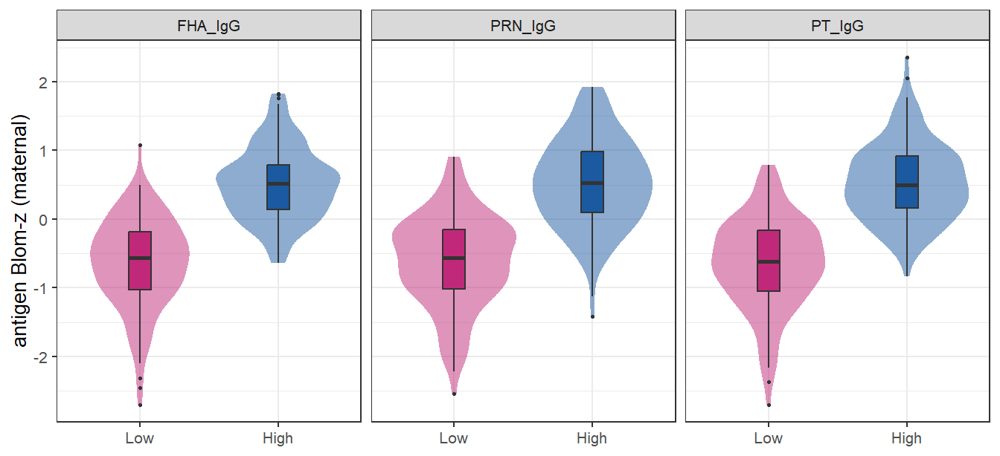
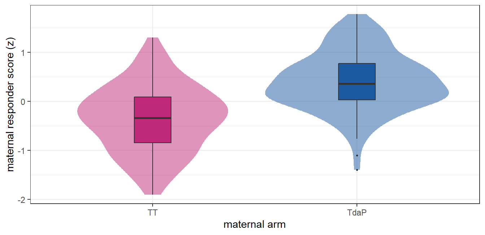
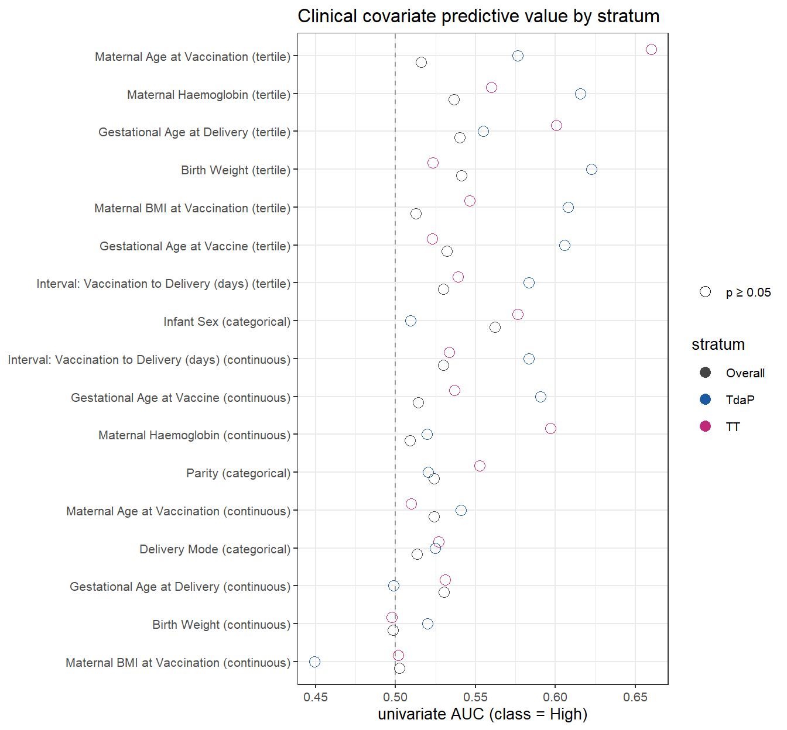
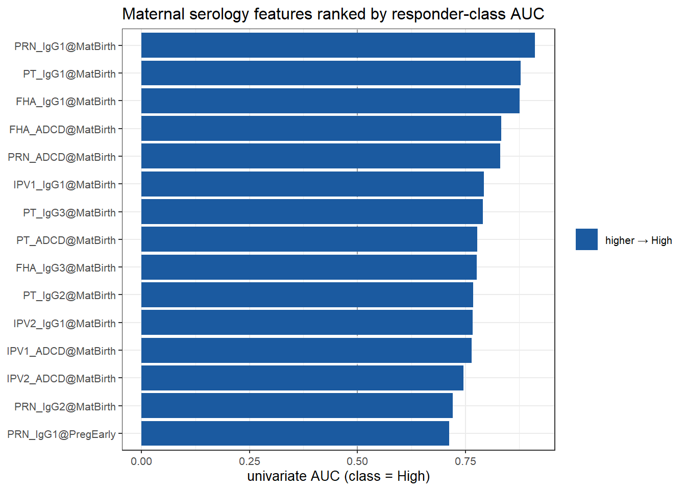
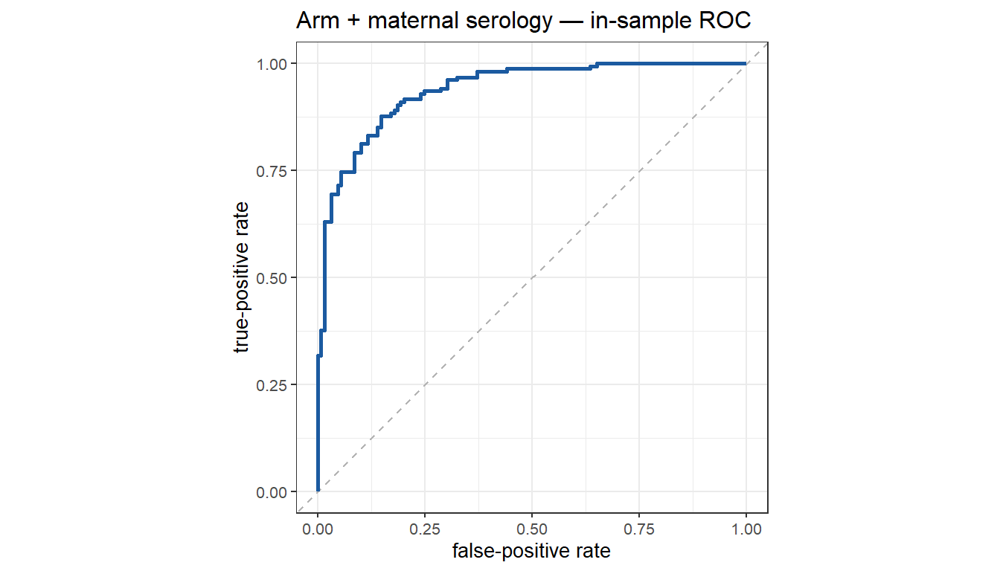

Do clinical covariates or a maternal serological signature predict which mothers are LOW vs HIGH responders? Stratified on the maternal arm (TdaP vs TT) only — no infant-arm analysis.
Phase 07 Stage A split mothers into Low and High responders from their binding antibody across the two maternal draws (PregEarly + MatBirth; features PT_IgG, FHA_IgG, PRN_IgG). This branch asks a single question about that split:
Is there a consistent clinical covariate or maternal serological signature that predicts which mothers are Low vs High responders?
Two facts shape the whole analysis:
The analysis runs in three parts:
clin_assess covariates, screened univariately (continuous +
tertile forms) against the responder score (linear) and
the Low/High class (logistic), overall and within each
arm, then a maternal-arm-adjusted multivariable model.RESP_FEATS <- params$responder_features
MAT_VIS <- params$maternal_visits
# Rebuild the Phase 07 Stage A Low/High class via the NEW helper (which reuses
# the C4_within_visit_helpers engine under the hood for an identical construct).
mat_cls <- build_maternal_responder_class(
data_raw, MAT_VIS, RESP_FEATS,
breadth_thresh = params$breadth_thresh, has_cluster = has_cluster)
arm_tbl <- subject_maternal_arm(data_raw)
mat <- merge(mat_cls, arm_tbl, by = "subject_accession")
mat <- mat[mat$arm_name %in% c("TdaP", "TT"), , drop = FALSE]
mat$arm_name <- factor(mat$arm_name, levels = c("TT", "TdaP")) # TT = reference
# Optional participant log (best-effort; this branch does not depend on the
# tracker API, so any signature mismatch is caught and ignored).
if (!is.null(nt) && exists("nt_log_manual", mode = "function")) {
nt <- tryCatch(
nt_log_manual(nt, "Mothers with Low/High class + arm", nrow(mat), stratum = "all"),
error = function(e1) tryCatch(
nt_log_manual(nt, "Mothers with Low/High class + arm", nrow(mat)),
error = function(e2) nt))
}The Low/High split is the mean Blom-standardised maternal response across the three defining features (PT_IgG, FHA_IgG, PRN_IgG) at the maternal visits (PregEarly, MatBirth). All three of PT, FHA and PRN enter the score; no ACT or PENTAMER feature does (neither is measured in this dataset, and both are explicitly excluded from every serology step below). This section decomposes the categories into the contribution of each defining antigen, so the High/Low classes can be read in terms of the antibodies that build them.
.blom_d <- function(x) { r <- rank(x, na.last = "keep"); n <- sum(!is.na(x)); stats::qnorm((r - 3/8) / (n + 1/4)) }
dec <- data_raw %>%
dplyr::filter(visit_name %in% MAT_VIS, as.character(feature) %in% RESP_FEATS) %>%
dplyr::group_by(subject_accession, feature, visit_name) %>%
dplyr::summarise(v = mean(log_assay_value, na.rm = TRUE), .groups = "drop") %>%
dplyr::mutate(key = paste(feature, visit_name, sep = "@")) %>%
dplyr::group_by(key) %>% dplyr::mutate(z = .blom_d(v)) %>% dplyr::ungroup() %>%
dplyr::group_by(subject_accession, feature) %>%
dplyr::summarise(antigen_z = mean(z, na.rm = TRUE), .groups = "drop")
decm <- dec %>% dplyr::inner_join(mat_cls[, c("subject_accession", "responder", "score")],
by = "subject_accession")
per_ant <- decm %>% dplyr::group_by(feature) %>%
dplyr::summarise(
n = sum(is.finite(antigen_z)),
mean_Low = round(mean(antigen_z[responder == "Low"], na.rm = TRUE), 3),
mean_High = round(mean(antigen_z[responder == "High"], na.rm = TRUE), 3),
diff = round(mean(antigen_z[responder == "High"], na.rm = TRUE) -
mean(antigen_z[responder == "Low"], na.rm = TRUE), 3),
AUC = round(auc_binary(antigen_z, responder), 3),
loading = round(stats::cor(antigen_z, score, use = "complete.obs"), 3),
p = tryCatch(signif(stats::wilcox.test(antigen_z ~ responder)$p.value, 3),
error = function(e) NA_real_),
.groups = "drop") %>%
dplyr::arrange(dplyr::desc(diff))
print(knitr::kable(per_ant,
caption = paste0("Table D1. Per-antigen decomposition of the responder categories. Each defining ",
"antigen's maternal Blom-z (averaged over the maternal visits) by class, the High-minus-Low ",
"difference, the antigen's discrimination of the class (AUC), and its loading (correlation) on the ",
"overall score. All three of PT, FHA and PRN contribute positively; the ranking shows which antigen ",
"separates the categories most.")))| feature | n | mean_Low | mean_High | diff | AUC | loading | p |
|---|---|---|---|---|---|---|---|
| PT_IgG | 283 | -0.650 | 0.536 | 1.185 | 0.921 | 0.867 | 0 |
| FHA_IgG | 283 | -0.642 | 0.516 | 1.158 | 0.926 | 0.890 | 0 |
| PRN_IgG | 283 | -0.610 | 0.538 | 1.148 | 0.895 | 0.859 | 0 |
top <- per_ant$feature[which.max(per_ant$diff)]
cat(sprintf(paste0("\nThe categories separate on **all three** defining antigens. The largest ",
"High-vs-Low gap is **%s** (\u0394z = %.3f, AUC = %.3f); every antigen loads ",
"positively on the score (loadings: %s).\n\n"),
top, per_ant$diff[per_ant$feature == top], per_ant$AUC[per_ant$feature == top],
paste(sprintf("%s %.2f", per_ant$feature, per_ant$loading), collapse = ", ")))The categories separate on all three defining antigens. The largest High-vs-Low gap is PT_IgG (Δz = 1.185, AUC = 0.921); every antigen loads positively on the score (loadings: PT_IgG 0.87, FHA_IgG 0.89, PRN_IgG 0.86).
ggplot(decm, aes(responder, antigen_z, fill = responder)) +
geom_violin(alpha = .5, color = NA) +
geom_boxplot(width = .16, outlier.size = .5) +
facet_wrap(~ feature, nrow = 1) +
scale_fill_manual(values = c(Low = "#c0297a", High = "#1b5aa0"), guide = "none") +
labs(x = NULL, y = "antigen Blom-z (maternal)") +
theme_bw(base_size = 10)
Figure D1. Per-antigen Blom-standardised maternal response (averaged over the maternal visits) by responder class, for each of the three score-defining antigens.
The ten covariates from clin_assess (identical to the
clinical-predictor analyses). infant_sex is retained as a
dyad covariate of the pregnancy, not as an infant-arm axis.
| Label | Variable | Type |
|---|---|---|
| Birth Weight | birth_weight | continuous (cont + tertile) |
| Infant Sex | infant_sex | categorical (2 level) |
| Delivery Mode | delivery_mode | categorical (2 level) |
| Parity | parity | categorical (2 level) |
| Gestational Age at Vaccine | gestational_age_vaccination | continuous (cont + tertile) |
| Interval: Vaccination to Delivery (days) | vaccine_birth_interval_days | continuous (cont + tertile) |
| Gestational Age at Delivery | gestational_age_birth | continuous (cont + tertile) |
| Maternal Age at Vaccination | maternal_age | continuous (cont + tertile) |
| Maternal BMI at Vaccination | maternal_bmi | continuous (cont + tertile) |
| Maternal Haemoglobin | maternal_Hb | continuous (cont + tertile) |
data <- merge(mat, clin, by = "subject_accession", all.x = TRUE)
# ---- prepare covariates (mirrors the clinical-predictor pipeline) ----
if ("infant_sex" %in% names(data)) data$infant_sex <- factor(data$infant_sex)
if ("delivery_mode" %in% names(data) && requireNamespace("forcats", quietly = TRUE)) {
dm <- factor(data$delivery_mode)
data$delivery_mode <- forcats::fct_collapse(dm,
vaginal = grep("(?i)vag|normal|spontan|SVD", levels(dm), value = TRUE, perl = TRUE),
cesarean = grep("(?i)ces|csec|section|C/S", levels(dm), value = TRUE, perl = TRUE))
data$delivery_mode <- tryCatch(stats::relevel(forcats::fct_drop(data$delivery_mode),
ref = "vaginal"),
error = function(e) data$delivery_mode)
}
if ("parity" %in% names(data))
data$parity <- factor(ifelse(data$parity == 0, "nulliparous", "parous"),
levels = c("nulliparous", "parous"))
for (v in cont_vars) if (v %in% names(data)) data[[paste0(v, "_T")]] <- make_tertile(data[[v]])
cat(sprintf("Merged analysis frame: **%d mothers × %d columns**; Low = %d, High = %d.\n\n",
nrow(data), ncol(data), sum(data$responder == "Low"),
sum(data$responder == "High")))## Merged analysis frame: **283 mothers × 24 columns**; Low = 129, High = 154.ids_resp <- mat$subject_accession
ids_clin <- clin$subject_accession
cat("responder mothers:", length(ids_resp),
"| in clin_assess:", sum(ids_resp %in% ids_clin),
"| missing:", sum(!ids_resp %in% ids_clin), "\n")## responder mothers: 283 | in clin_assess: 211 | missing: 72# are the unmatched a format issue? peek at both ID styles:
head(setdiff(ids_resp, ids_clin)); str(ids_resp); str(ids_clin)## [1] 23 24 25 28 31 32## num [1:283] 1 3 4 5 6 7 8 9 10 11 ...## num [1:239] 1 3 4 5 6 7 8 9 10 11 ...# is missingness related to responder status (not just arm)?
data$has_clin <- !is.na(data$maternal_age)
print(table(data$responder, data$has_clin))##
## FALSE TRUE
## Low 31 98
## High 41 113🧭 Maps to summary: “how much of the responder split is the vaccine itself?”
tab <- table(arm = data$arm_name, responder = data$responder)
print(knitr::kable(as.data.frame.matrix(tab),
caption = "Table A1. Maternal arm × responder class."))| Low | High | |
|---|---|---|
| TT | 109 | 44 |
| TdaP | 20 | 110 |
w <- tryCatch(stats::wilcox.test(score ~ arm_name, data = data), error = function(e) NULL)
arm_auc <- auc_binary(as.numeric(data$arm_name == "TdaP"), data$responder)
ft <- tryCatch(stats::fisher.test(tab), error = function(e) NULL)
cat(sprintf(paste0("\nResponder **score** by arm: Wilcoxon %s. ",
"Arm alone separates the **class** at AUC = **%.3f** (Fisher p = %s). ",
"This is the bar Parts B and C must beat.\n\n"),
if (!is.null(w)) sprintf("W = %.0f, p = %.3g", w$statistic, w$p.value) else "n/a",
arm_auc, if (!is.null(ft)) signif(ft$p.value, 3) else "n/a"))Responder score by arm: Wilcoxon W = 4049, p = 8.49e-18. Arm alone separates the class at AUC = 0.780 (Fisher p = 6.17e-22). This is the bar Parts B and C must beat.
ggplot(data, aes(arm_name, score, fill = arm_name)) +
geom_violin(alpha = .5, color = NA) +
geom_boxplot(width = .18, outlier.size = .6) +
scale_fill_manual(values = c(TT = "#c0297a", TdaP = "#1b5aa0"), guide = "none") +
labs(x = "maternal arm", y = "maternal responder score (z)") +
theme_bw(base_size = 11)
Figure A1. Maternal responder score by arm (the score that defines Low/High).
Each covariate is screened against the responder score (linear model, mirrors the clinical-predictor pipeline) and the Low/High class (logistic), in three strata: Overall, TdaP mothers, TT mothers.
strata <- list(
Overall = data,
TdaP = dplyr::filter(data, arm_name == "TdaP"),
TT = dplyr::filter(data, arm_name == "TT"))
screen_score <- lapply(strata, function(d)
run_clinical_screen(d, "score", covariates_named_list, cat_vars,
mode = "lm", alpha = params$alpha))
screen_class <- lapply(strata, function(d)
run_clinical_screen(d, "responder", covariates_named_list, cat_vars,
mode = "logit", alpha = params$alpha))for (st in names(screen_score)) show_univ(screen_score[[st]], paste0(st, " — score"))| Covariate | Form | n | R2 / pseudo-R2 | AUC | p (model) | |
|---|---|---|---|---|---|---|
| Birth Weight | continuous | 208 | 0.007 | — | 0.242 | ns |
| Birth Weight | tertile | 208 | 0.007 | — | 0.472 | ns |
| Infant Sex | categorical | 211 | 0.028 | — | 0.0145 | * |
| Delivery Mode | categorical | 211 | 0.001 | — | 0.647 | ns |
| Parity | categorical | 211 | 0.003 | — | 0.462 | ns |
| Gestational Age at Vaccine | continuous | 211 | 0.001 | — | 0.596 | ns |
| Gestational Age at Vaccine | tertile | 211 | 0.006 | — | 0.524 | ns |
| Interval: Vaccination to Delivery (days) | continuous | 211 | 0.014 | — | 0.0882 | ns |
| Interval: Vaccination to Delivery (days) | tertile | 211 | 0.014 | — | 0.234 | ns |
| Gestational Age at Delivery | continuous | 211 | 0.022 | — | 0.0305 | * |
| Gestational Age at Delivery | tertile | 211 | 0.016 | — | 0.183 | ns |
| Maternal Age at Vaccination | continuous | 211 | 0.008 | — | 0.203 | ns |
| Maternal Age at Vaccination | tertile | 211 | 0.011 | — | 0.313 | ns |
| Maternal BMI at Vaccination | continuous | 210 | 0.000 | — | 0.862 | ns |
| Maternal BMI at Vaccination | tertile | 210 | 0.003 | — | 0.749 | ns |
| Maternal Haemoglobin | continuous | 210 | 0.002 | — | 0.569 | ns |
| Maternal Haemoglobin | tertile | 210 | 0.002 | — | 0.841 | ns |
Selected (p < 0.05): Infant Sex; Gestational Age at Delivery
| Predictor | est | SE | stat | p | sig |
|---|---|---|---|---|---|
| (Intercept) | -2.8915072 | 1.2845057 | -2.251066 | 0.0254271 | * |
| infant_sexMale | 0.2383156 | 0.0976519 | 2.440461 | 0.0155054 | * |
| gestational_age_birth | 0.0706433 | 0.0328248 | 2.152132 | 0.0325389 | * |
| Covariate | Form | n | R2 / pseudo-R2 | AUC | p (model) | |
|---|---|---|---|---|---|---|
| Birth Weight | continuous | 96 | 0.010 | — | 0.327 | ns |
| Birth Weight | tertile | 96 | 0.015 | — | 0.497 | ns |
| Infant Sex | categorical | 97 | 0.013 | — | 0.275 | ns |
| Delivery Mode | categorical | 97 | 0.017 | — | 0.199 | ns |
| Parity | categorical | 97 | 0.001 | — | 0.742 | ns |
| Gestational Age at Vaccine | continuous | 97 | 0.001 | — | 0.715 | ns |
| Gestational Age at Vaccine | tertile | 97 | 0.015 | — | 0.496 | ns |
| Interval: Vaccination to Delivery (days) | continuous | 97 | 0.005 | — | 0.485 | ns |
| Interval: Vaccination to Delivery (days) | tertile | 97 | 0.020 | — | 0.39 | ns |
| Gestational Age at Delivery | continuous | 97 | 0.003 | — | 0.62 | ns |
| Gestational Age at Delivery | tertile | 97 | 0.014 | — | 0.52 | ns |
| Maternal Age at Vaccination | continuous | 97 | 0.008 | — | 0.371 | ns |
| Maternal Age at Vaccination | tertile | 97 | 0.063 | — | 0.0465 | * |
| Maternal BMI at Vaccination | continuous | 97 | 0.001 | — | 0.799 | ns |
| Maternal BMI at Vaccination | tertile | 97 | 0.005 | — | 0.787 | ns |
| Maternal Haemoglobin | continuous | 97 | 0.008 | — | 0.381 | ns |
| Maternal Haemoglobin | tertile | 97 | 0.015 | — | 0.484 | ns |
Selected (p < 0.05): Maternal Age at Vaccination
| Covariate | Form | n | R2 / pseudo-R2 | AUC | p (model) | |
|---|---|---|---|---|---|---|
| Birth Weight | continuous | 112 | 0.008 | — | 0.352 | ns |
| Birth Weight | tertile | 112 | 0.012 | — | 0.516 | ns |
| Infant Sex | categorical | 114 | 0.027 | — | 0.0831 | ns |
| Delivery Mode | categorical | 114 | 0.007 | — | 0.393 | ns |
| Parity | categorical | 114 | 0.022 | — | 0.113 | ns |
| Gestational Age at Vaccine | continuous | 114 | 0.020 | — | 0.136 | ns |
| Gestational Age at Vaccine | tertile | 114 | 0.006 | — | 0.714 | ns |
| Interval: Vaccination to Delivery (days) | continuous | 114 | 0.045 | — | 0.024 | * |
| Interval: Vaccination to Delivery (days) | tertile | 114 | 0.031 | — | 0.171 | ns |
| Gestational Age at Delivery | continuous | 114 | 0.033 | — | 0.054 | ns |
| Gestational Age at Delivery | tertile | 114 | 0.041 | — | 0.0975 | ns |
| Maternal Age at Vaccination | continuous | 114 | 0.002 | — | 0.682 | ns |
| Maternal Age at Vaccination | tertile | 114 | 0.102 | — | 0.0026 | ** |
| Maternal BMI at Vaccination | continuous | 113 | 0.004 | — | 0.525 | ns |
| Maternal BMI at Vaccination | tertile | 113 | 0.005 | — | 0.751 | ns |
| Maternal Haemoglobin | continuous | 113 | 0.009 | — | 0.307 | ns |
| Maternal Haemoglobin | tertile | 113 | 0.007 | — | 0.663 | ns |
Selected (p < 0.05): Interval: Vaccination to Delivery (days); Maternal Age at Vaccination
| Predictor | est | SE | stat | p | sig |
|---|---|---|---|---|---|
| (Intercept) | -1.0832284 | 0.2816626 | -3.8458367 | 0.0002017 | *** |
| vaccine_birth_interval_days | 0.0082738 | 0.0040295 | 2.0533114 | 0.0424143 | * |
| maternal_age_TT2 (mid) | 0.4236692 | 0.1361308 | 3.1122206 | 0.0023663 | ** |
| maternal_age_TT3 (high) | 0.0636487 | 0.1527139 | 0.4167837 | 0.6776488 | ns |
for (st in names(screen_class)) show_univ(screen_class[[st]], paste0(st, " — class"))| Covariate | Form | n | R2 / pseudo-R2 | AUC | p (model) | |
|---|---|---|---|---|---|---|
| Birth Weight | continuous | 208 | 0.264 | 0.498 | — | — |
| Birth Weight | tertile | 208 | 0.268 | 0.541 | — | — |
| Infant Sex | categorical | 211 | 0.261 | 0.562 | — | — |
| Delivery Mode | categorical | 211 | 0.255 | 0.514 | — | — |
| Parity | categorical | 211 | 0.255 | 0.524 | — | — |
| Gestational Age at Vaccine | continuous | 211 | 0.253 | 0.514 | — | — |
| Gestational Age at Vaccine | tertile | 211 | 0.256 | 0.532 | — | — |
| Interval: Vaccination to Delivery (days) | continuous | 211 | 0.254 | 0.530 | — | — |
| Interval: Vaccination to Delivery (days) | tertile | 211 | 0.255 | 0.530 | — | — |
| Gestational Age at Delivery | continuous | 211 | 0.256 | 0.530 | — | — |
| Gestational Age at Delivery | tertile | 211 | 0.257 | 0.540 | — | — |
| Maternal Age at Vaccination | continuous | 211 | 0.253 | 0.524 | — | — |
| Maternal Age at Vaccination | tertile | 211 | 0.253 | 0.516 | — | — |
| Maternal BMI at Vaccination | continuous | 210 | 0.257 | 0.503 | — | — |
| Maternal BMI at Vaccination | tertile | 210 | 0.257 | 0.513 | — | — |
| Maternal Haemoglobin | continuous | 210 | 0.257 | 0.509 | — | — |
| Maternal Haemoglobin | tertile | 210 | 0.260 | 0.536 | — | — |
No covariate reached p < 0.05 in this stratum.
| Covariate | Form | n | R2 / pseudo-R2 | AUC | p (model) | |
|---|---|---|---|---|---|---|
| Birth Weight | continuous | 96 | 0.225 | 0.520 | — | — |
| Birth Weight | tertile | 96 | 0.252 | 0.623 | — | — |
| Infant Sex | categorical | 97 | 0.222 | 0.509 | — | — |
| Delivery Mode | categorical | 97 | 0.235 | 0.525 | — | — |
| Parity | categorical | 97 | 0.223 | 0.520 | — | — |
| Gestational Age at Vaccine | continuous | 97 | 0.232 | 0.591 | — | — |
| Gestational Age at Vaccine | tertile | 97 | 0.241 | 0.606 | — | — |
| Interval: Vaccination to Delivery (days) | continuous | 97 | 0.228 | 0.583 | — | — |
| Interval: Vaccination to Delivery (days) | tertile | 97 | 0.236 | 0.583 | — | — |
| Gestational Age at Delivery | continuous | 97 | 0.222 | 0.499 | — | — |
| Gestational Age at Delivery | tertile | 97 | 0.228 | 0.555 | — | — |
| Maternal Age at Vaccination | continuous | 97 | 0.223 | 0.541 | — | — |
| Maternal Age at Vaccination | tertile | 97 | 0.231 | 0.576 | — | — |
| Maternal BMI at Vaccination | continuous | 97 | 0.222 | 0.449 | — | — |
| Maternal BMI at Vaccination | tertile | 97 | 0.246 | 0.608 | — | — |
| Maternal Haemoglobin | continuous | 97 | 0.223 | 0.520 | — | — |
| Maternal Haemoglobin | tertile | 97 | 0.245 | 0.616 | — | — |
No covariate reached p < 0.05 in this stratum.
| Covariate | Form | n | R2 / pseudo-R2 | AUC | p (model) | |
|---|---|---|---|---|---|---|
| Birth Weight | continuous | 112 | 0.270 | 0.498 | — | — |
| Birth Weight | tertile | 112 | 0.271 | 0.523 | — | — |
| Infant Sex | categorical | 114 | 0.275 | 0.577 | — | — |
| Delivery Mode | categorical | 114 | 0.269 | 0.527 | — | — |
| Parity | categorical | 114 | 0.270 | 0.553 | — | — |
| Gestational Age at Vaccine | continuous | 114 | 0.265 | 0.537 | — | — |
| Gestational Age at Vaccine | tertile | 114 | 0.264 | 0.523 | — | — |
| Interval: Vaccination to Delivery (days) | continuous | 114 | 0.266 | 0.534 | — | — |
| Interval: Vaccination to Delivery (days) | tertile | 114 | 0.266 | 0.539 | — | — |
| Gestational Age at Delivery | continuous | 114 | 0.267 | 0.531 | — | — |
| Gestational Age at Delivery | tertile | 114 | 0.283 | 0.601 | — | — |
| Maternal Age at Vaccination | continuous | 114 | 0.264 | 0.510 | — | — |
| Maternal Age at Vaccination | tertile | 114 | 0.309 | 0.660 | — | — |
| Maternal BMI at Vaccination | continuous | 113 | 0.266 | 0.502 | — | — |
| Maternal BMI at Vaccination | tertile | 113 | 0.270 | 0.546 | — | — |
| Maternal Haemoglobin | continuous | 113 | 0.287 | 0.597 | — | — |
| Maternal Haemoglobin | tertile | 113 | 0.274 | 0.560 | — | — |
No covariate reached p < 0.05 in this stratum.
🧭 Maps to summary: “does any clinical covariate predict the class beyond the arm?”
# Enter arm + any covariate selected in ANY stratum (score or class), jointly.
sel_any <- unique(unlist(c(
lapply(screen_score, function(s) unname(unlist(s$selected))),
lapply(screen_class, function(s) unname(unlist(s$selected))))))
sel_any <- sel_any[!is.na(sel_any)]
if (length(sel_any)) {
fla <- stats::reformulate(c("arm_name", sel_any), response = "responder")
m_adj <- tryCatch(stats::glm(fla, data = data, family = stats::binomial(),
na.action = stats::na.omit), error = function(e) NULL)
if (!is.null(m_adj)) {
print(knitr::kable(.tidy_fit(m_adj, logit = TRUE),
caption = "Table B-adj. Arm-adjusted logistic model for High responder (OR per term)."))
au <- auc_binary(stats::predict(m_adj, type = "response"),
stats::model.frame(m_adj)[["responder"]])
cat(sprintf("\nIn-sample AUC = **%.3f** (vs arm-only AUC = %.3f). ", au, arm_auc))
cat("Only terms that stay significant *after* arm adjustment add information beyond the vaccine.\n\n")
}
} else {
cat("*No clinical covariate was selected in any stratum, so no arm-adjusted model is fitted — ",
"clinical covariates do not predict responder status beyond the arm.*\n\n")
}| Predictor | est | SE | stat | p | OR | OR_lo | OR_hi | sig |
|---|---|---|---|---|---|---|---|---|
| (Intercept) | 0.4373078 | 5.3785559 | 0.0813058 | 0.9351988 | 1.5485327 | 0.0000409 | 58646.160980 | ns |
| arm_nameTdaP | 2.7678298 | 0.3787834 | 7.3071564 | 0.0000000 | 15.9240388 | 7.5792503 | 33.456477 | *** |
| infant_sexMale | 0.4360930 | 0.3426837 | 1.2725815 | 0.2031666 | 1.5466526 | 0.7901226 | 3.027548 | ns |
| gestational_age_birth | -0.0763645 | 0.1545209 | -0.4942014 | 0.6211640 | 0.9264785 | 0.6843913 | 1.254198 | ns |
| maternal_age_TT2 (mid) | 0.5744815 | 0.4213893 | 1.3633036 | 0.1727868 | 1.7762094 | 0.7776790 | 4.056841 | ns |
| maternal_age_TT3 (high) | -0.0729366 | 0.4258058 | -0.1712907 | 0.8639952 | 0.9296598 | 0.4035254 | 2.141792 | ns |
| vaccine_birth_interval_days | 0.0176752 | 0.0158074 | 1.1181594 | 0.2634989 | 1.0178324 | 0.9867808 | 1.049861 | ns |
In-sample AUC = 0.819 (vs arm-only AUC = 0.780). Only terms that stay significant after arm adjustment add information beyond the vaccine.
all_rows <- dplyr::bind_rows(lapply(names(screen_class), function(sn)
dplyr::mutate(screen_class[[sn]]$univ_table, Stratum = sn)))
disp <- all_rows %>%
dplyr::mutate(cell = ifelse(is.na(auc), "\u2014",
sprintf("%.2f%s", auc, ifelse(sig %in% c("*","**","***"), sig, "")))) %>%
dplyr::select(Label, Form, Stratum, cell) %>%
tidyr::pivot_wider(names_from = Stratum, values_from = cell)
print(knitr::kable(disp,
caption = "Table B-x. Univariate class AUC (with significance stars) across strata."))| Label | Form | Overall | TdaP | TT |
|---|---|---|---|---|
| Birth Weight | continuous | 0.50 | 0.52 | 0.50 |
| Birth Weight | tertile | 0.54 | 0.62 | 0.52 |
| Infant Sex | categorical | 0.56 | 0.51 | 0.58 |
| Delivery Mode | categorical | 0.51 | 0.52 | 0.53 |
| Parity | categorical | 0.52 | 0.52 | 0.55 |
| Gestational Age at Vaccine | continuous | 0.51 | 0.59 | 0.54 |
| Gestational Age at Vaccine | tertile | 0.53 | 0.61 | 0.52 |
| Interval: Vaccination to Delivery (days) | continuous | 0.53 | 0.58 | 0.53 |
| Interval: Vaccination to Delivery (days) | tertile | 0.53 | 0.58 | 0.54 |
| Gestational Age at Delivery | continuous | 0.53 | 0.50 | 0.53 |
| Gestational Age at Delivery | tertile | 0.54 | 0.55 | 0.60 |
| Maternal Age at Vaccination | continuous | 0.52 | 0.54 | 0.51 |
| Maternal Age at Vaccination | tertile | 0.52 | 0.58 | 0.66 |
| Maternal BMI at Vaccination | continuous | 0.50 | 0.45 | 0.50 |
| Maternal BMI at Vaccination | tertile | 0.51 | 0.61 | 0.55 |
| Maternal Haemoglobin | continuous | 0.51 | 0.52 | 0.60 |
| Maternal Haemoglobin | tertile | 0.54 | 0.62 | 0.56 |
pdat <- all_rows %>%
dplyr::filter(!is.na(auc)) %>%
dplyr::mutate(sig_fill = !is.na(p_model) & p_model < params$alpha,
cov_form = paste0(Label, " (", Form, ")"))
ggplot(pdat, aes(auc, reorder(cov_form, auc), color = Stratum, shape = sig_fill)) +
geom_vline(xintercept = 0.5, linetype = "dashed", color = "grey60") +
geom_point(size = 3, position = position_dodge(.5)) +
scale_shape_manual(values = c(`TRUE` = 16, `FALSE` = 1),
labels = c(`TRUE` = paste0("p < ", params$alpha),
`FALSE` = paste0("p \u2265 ", params$alpha))) +
scale_color_manual(values = c(Overall = "#444444", TdaP = "#1b5aa0", TT = "#c0297a")) +
labs(x = "univariate AUC (class = High)", y = NULL, color = "stratum", shape = NULL,
title = "Clinical covariate predictive value by stratum") +
theme_bw(base_size = 10)
Figure B1. Univariate predictive AUC of each clinical covariate for the Low/High class, by stratum. Filled = p < alpha.
🧭 Maps to summary: “is there an antibody-side signature of the responder class that the 3 defining features don’t already encode?”
We assemble a maternal-serology matrix from all antigen × analyte features at the maternal visits, excluding the 3 responder-defining features (PT_IgG, FHA_IgG, PRN_IgG) so the signature is not circular with the score. Features are Blom-standardised within each feature@visit.
# Explicit guard: never let ACT or PENTAMER features enter the signature (they carry
# no measured rows in this dataset, but the exclusion is made explicit per protocol).
.excl_anti <- { .av <- unique(as.character(data_raw$feature)); .av[sub("_.*$", "", toupper(.av)) %in% c("ACT", "PENTAMER")] }
.excl <- union(RESP_FEATS, .excl_anti)
W_all <- build_maternal_serology_matrix(data_raw, MAT_VIS, exclude_feats = .excl,
min_coverage = params$min_coverage)
W_base <- build_maternal_serology_matrix(data_raw, params$baseline_visit,
exclude_feats = .excl,
min_coverage = params$min_coverage)
cat(sprintf("Serology predictor matrices: all maternal visits = **%d features**; ",
ncol(W_all) - 1))## Serology predictor matrices: all maternal visits = **86 features**;cat(sprintf("pre-vaccination (%s) baseline = **%d features**.\n\n",
params$baseline_visit, ncol(W_base) - 1))## pre-vaccination (PregEarly) baseline = **43 features**.su <- serology_univariate_auc(W_all, mat_cls)
su$base_feature <- sub("@.*$", "", su$feature)
cls_map <- classify_feature(unique(su$base_feature))
su_disp <- su %>%
dplyr::left_join(cls_map, by = c("base_feature" = "feature")) %>%
dplyr::mutate(auc = round(auc, 3), p = signif(p, 3), p_BH = signif(p_BH, 3)) %>%
dplyr::select(feature, antigen, analyte_class, n, auc, p, p_BH)
print(knitr::kable(utils::head(su_disp, 20),
caption = "Table C1. Top maternal serology features by univariate AUC for the Low/High class."))| feature | antigen | analyte_class | n | auc | p | p_BH |
|---|---|---|---|---|---|---|
| PRN_IgG1@MatBirth | PRN | IgG subclass | 245 | 0.911 | 0.0e+00 | 0.0e+00 |
| PT_IgG1@MatBirth | PT | IgG subclass | 245 | 0.878 | 0.0e+00 | 0.0e+00 |
| FHA_IgG1@MatBirth | FHA | IgG subclass | 245 | 0.876 | 0.0e+00 | 0.0e+00 |
| FHA_ADCD@MatBirth | FHA | effector function | 239 | 0.833 | 0.0e+00 | 0.0e+00 |
| PRN_ADCD@MatBirth | PRN | effector function | 239 | 0.831 | 0.0e+00 | 0.0e+00 |
| IPV1_IgG1@MatBirth | IPV1 | IgG subclass | 245 | 0.793 | 0.0e+00 | 0.0e+00 |
| PT_IgG3@MatBirth | PT | IgG subclass | 239 | 0.790 | 0.0e+00 | 0.0e+00 |
| PT_ADCD@MatBirth | PT | effector function | 239 | 0.778 | 0.0e+00 | 0.0e+00 |
| FHA_IgG3@MatBirth | FHA | IgG subclass | 239 | 0.777 | 0.0e+00 | 0.0e+00 |
| PT_IgG2@MatBirth | PT | IgG subclass | 233 | 0.769 | 0.0e+00 | 0.0e+00 |
| IPV2_IgG1@MatBirth | IPV2 | IgG subclass | 245 | 0.766 | 0.0e+00 | 0.0e+00 |
| IPV1_ADCD@MatBirth | IPV1 | effector function | 239 | 0.764 | 0.0e+00 | 0.0e+00 |
| IPV2_ADCD@MatBirth | IPV2 | effector function | 239 | 0.745 | 0.0e+00 | 0.0e+00 |
| PRN_IgG2@MatBirth | PRN | IgG subclass | 233 | 0.720 | 0.0e+00 | 0.0e+00 |
| PRN_IgG1@PregEarly | PRN | IgG subclass | 242 | 0.712 | 0.0e+00 | 1.0e-07 |
| PRN_IgG4@MatBirth | PRN | IgG subclass | 245 | 0.704 | 0.0e+00 | 2.0e-07 |
| PRN_IgG3@MatBirth | PRN | IgG subclass | 239 | 0.696 | 2.0e-07 | 8.0e-07 |
| PT_IgG4@MatBirth | PT | IgG subclass | 245 | 0.689 | 3.0e-07 | 1.6e-06 |
| FHA_IgG1@PregEarly | FHA | IgG subclass | 242 | 0.677 | 2.1e-06 | 8.9e-06 |
| DT_IgG@MatBirth | DT | IgG total | 283 | 0.670 | 9.0e-07 | 4.1e-06 |
top <- utils::head(su, 15)
top$feature <- factor(top$feature, levels = rev(top$feature))
ggplot(top, aes(auc, feature, fill = auc >= 0.5)) +
geom_vline(xintercept = 0.5, linetype = "dashed", color = "grey60") +
geom_col() +
scale_fill_manual(values = c(`TRUE` = "#1b5aa0", `FALSE` = "#c0297a"),
labels = c(`TRUE` = "higher \u2192 High", `FALSE` = "higher \u2192 Low"),
name = NULL) +
labs(x = "univariate AUC (class = High)", y = NULL,
title = "Maternal serology features ranked by responder-class AUC") +
theme_bw(base_size = 10)
Figure C1. Top-15 maternal serology features by univariate AUC for the responder class.
The elastic net forces the maternal arm in unpenalised and lets the serology features compete for the remaining signal; CV-AUC is the honest metric (in-sample AUC is optimistic). We compare the pre-vaccination baseline matrix with the full maternal matrix.
if (!has_glmnet) {
cat("> **glmnet is not installed**, so the penalised model is skipped. ",
"Install `glmnet` to run the cross-validated signature; the univariate AUC ",
"ranking above still indicates which features carry signal.\n\n")
} else {
en_base <- elastic_net_signature(W_base, mat_cls, arm_tbl = arm_tbl,
alpha = params$en_alpha, nfolds = params$en_folds,
seed = params$seed)
en_all <- elastic_net_signature(W_all, mat_cls, arm_tbl = arm_tbl,
alpha = params$en_alpha, nfolds = params$en_folds,
seed = params$seed)
cmp <- data.frame(
model = c("arm only (reference)",
sprintf("arm + baseline serology (%s)", params$baseline_visit),
"arm + all maternal serology"),
cv_auc = c(round(arm_auc, 3),
if (isTRUE(en_base$ok)) round(en_base$cv_auc, 3) else NA,
if (isTRUE(en_all$ok)) round(en_all$cv_auc, 3) else NA),
n_features_selected = c(0L,
if (isTRUE(en_base$ok)) nrow(en_base$coefs) - 1L else NA_integer_,
if (isTRUE(en_all$ok)) nrow(en_all$coefs) - 1L else NA_integer_),
stringsAsFactors = FALSE)
print(knitr::kable(cmp,
caption = "Table C2. Cross-validated AUC: does serology add to the arm? (arm-only is the Part-A rank statistic; serology rows are CV-AUC.)"))
if (isTRUE(en_all$ok) && nrow(en_all$coefs) > 1) {
co <- en_all$coefs[en_all$coefs$term != "(Intercept)", , drop = FALSE]
co <- co[order(-abs(co$coef)), , drop = FALSE]
co$coef <- round(co$coef, 3)
print(knitr::kable(co, row.names = FALSE,
caption = "Table C3. Non-zero elastic-net coefficients (arm forced in; standardised features)."))
}
}| model | cv_auc | n_features_selected |
|---|---|---|
| arm only (reference) | 0.780 | 0 |
| arm + baseline serology (PregEarly) | 0.883 | 2 |
| arm + all maternal serology | 0.917 | 23 |
| term | coef |
|---|---|
| arm_TdaP | -1.855 |
| PRN_IgG1@MatBirth | 0.480 |
| PRN_IgG1@PregEarly | 0.343 |
| PT_IgG3@MatBirth | 0.336 |
| IPV1_IgG2@PregEarly | -0.185 |
| FHA_IgG1@PregEarly | 0.185 |
| PRN_ADCD@MatBirth | 0.166 |
| FIM_IgG@MatBirth | 0.163 |
| FHA_ADCD@MatBirth | 0.162 |
| FHA_IgG3@MatBirth | 0.156 |
| PT_IgG1@MatBirth | 0.150 |
| PT_IgG1@PregEarly | 0.137 |
| DT_IgG4@MatBirth | 0.132 |
| PRN_IgG3@MatBirth | 0.080 |
| FHA_IgG3@PregEarly | 0.077 |
| FIM_IgG@PregEarly | 0.077 |
| TT_IgG@MatBirth | -0.071 |
| DT_ADCD@PregEarly | -0.067 |
| IPV3_ADCD@PregEarly | -0.052 |
| FHA_ADCD@PregEarly | 0.031 |
| PT_ADCD@MatBirth | 0.028 |
| IPV3_IgG4@PregEarly | -0.016 |
| PRN_IgG2@MatBirth | 0.001 |
if (has_glmnet && exists("en_all") && isTRUE(en_all$ok)) {
pr <- as.numeric(predict(en_all$cv, newx = en_all$X, s = "lambda.min", type = "response"))
rp <- roc_points(pr, en_all$y)
ggplot(rp, aes(fpr, tpr)) +
geom_abline(slope = 1, intercept = 0, linetype = "dashed", color = "grey70") +
geom_path(color = "#1b5aa0", linewidth = 1) +
labs(x = "false-positive rate", y = "true-positive rate",
title = "Arm + maternal serology — in-sample ROC") +
coord_equal() + theme_bw(base_size = 10)
}
Figure C2. In-sample ROC for the arm + all-maternal-serology elastic net (optimistic; compare CV-AUC in Table C2).
manual_acct <- function()
cat(sprintf("Mothers analysed: **%d** (Low = %d, High = %d); TdaP = %d, TT = %d.\n\n",
nrow(data), sum(data$responder == "Low"), sum(data$responder == "High"),
sum(data$arm_name == "TdaP"), sum(data$arm_name == "TT")))
if (!is.null(nt) && exists("nt_render", mode = "function")) {
ok <- tryCatch({ nt_render(nt, caption = "Participant accounting for Phase 08."); TRUE },
error = function(e) FALSE)
if (!ok) manual_acct()
} else {
manual_acct()
}No models logged.
Phase 08 branch. The maternal Low/High class is the Phase 07
Stage A construct, rebuilt via the new
R/C3_responder_helpers.R (which calls the unmodified
R/C4_within_visit_helpers.R engine). Outcome modelled as
both the continuous responder score (linear) and the binary class
(logistic). Stratifier: maternal arm only — no infant-arm analysis. Knit
both formats with
rmarkdown::render("08_maternal_responder_predictors.Rmd", output_format = "all").